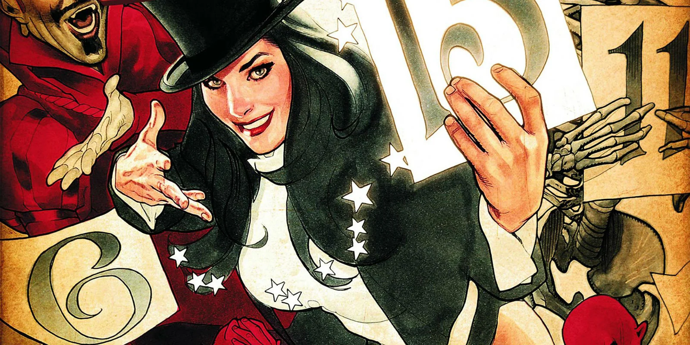

About Zatanna
Zatanna is a magic user in the DC universe whom assists the Justice League on missions.
Zatanna Comic Cover
Zatanna's Characteristics
- She first appeared in Hawkman #4 in 1964
- She works as both a stage magician and an acual musgician
- She contols and uses spells by speaking her incantations backwards
Zatanna's Friends
Zatanna has many friends and partnerships but is close friend and confidant of Batman. Click on the links below to read more about them: